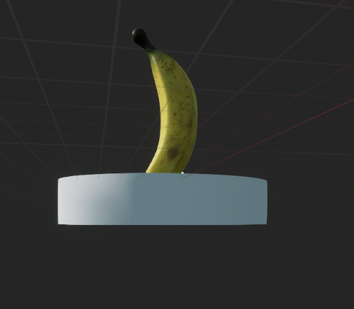
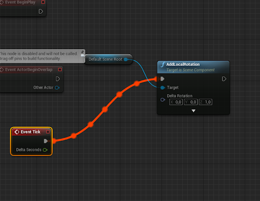
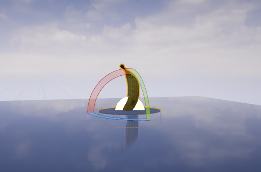
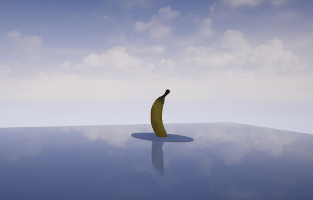

Introduction
Voor de introductie opdracht van de AR/VR workshops was het de bedoeling dat er gewerkt aan een tutorial voor unreal engine. Het uiteindelijke doel hiervan was om met de software omgeving van unreal kennis te maken. De opdracht was om een banaan te maken die op een platform staat en die dan ronddraait.



